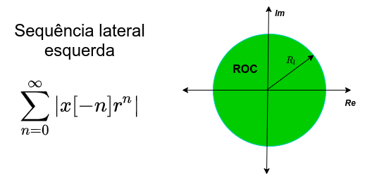
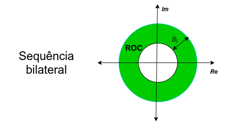
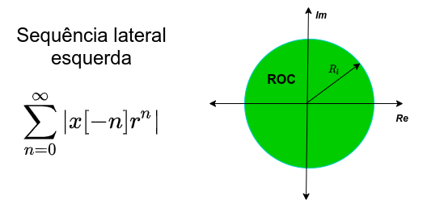
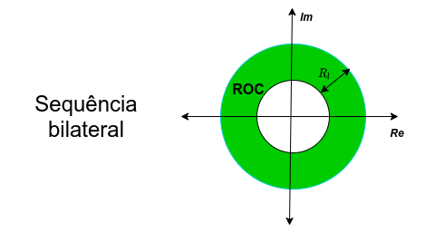
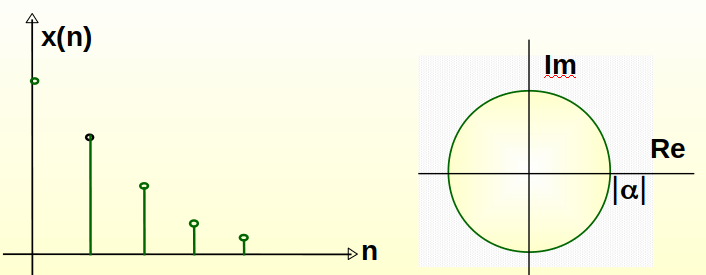
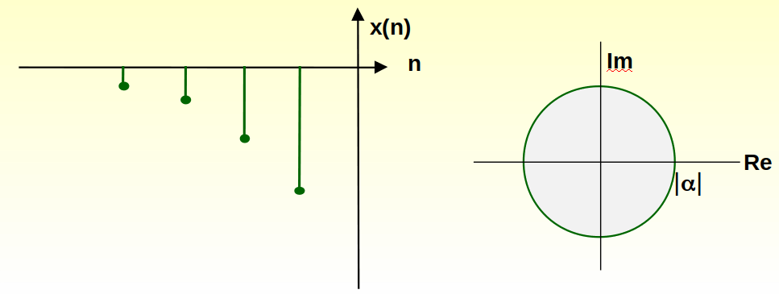
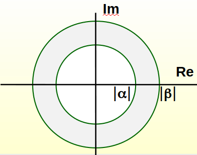
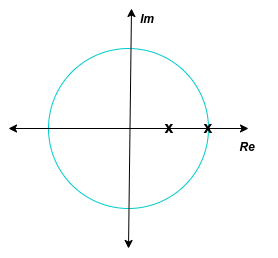

import matplotlib.pyplot as plt
import numpy as np
plt.rcParams['figure.figsize'] = [8, 8]
font = {'family' : 'DejaVu Sans',
#'weight' : 'bold',
'size' : 24}
plt.rc('font', **font)
Aula 6 - Transformada Z#
Versão 2023
Essas notas de aula podem ser compartilhadas nos termos da lincença Creative Commons CC BY-NC-ND 4.0, com propósitos exclusivamente educacionais.
Attribution-NonCommercial-NoDerivatives 4.0 International
Introdução
A transformada - z pode ser considerada como uma generalização da transformada de Fourier para sequências.
Desempenha, para sistemas discretos, o mesmo papel que a transformada de Laplace faz para sistemas contínuos no tempo.
Utilização:
Análise e projeto de sistemas lineares discretos e invariantes no tempo. Determinação da função do sistema \(H(z)\) ou da resposta em frequência \(H(e^{jw})\).
Verificação da Estabilidade e Causalidade de Sistemas pela Análise dos pólos e zeros da função.
1. Definição da Transformada z
Considere a sequência \(x[n] : n = 0, \pm1, \pm2, \dots\)
A transformada z de \(x[n]\) é definida como segue:
\(z^{-n}\): operador de atraso de \(nT_a\) segundos ou \(n\) amostras.
\(z\) é uma variável complexa do tipo: \(z = re^{j\omega}\)
\(r\) é o módulo da variável,
\(\omega\) é o ângulo.
Lembre que \(0 \leq \omega < 2\pi\) ou \(-\pi \leq \omega < \pi\).
Interpretação no Plano z
Para $Círculo de raio unitário)
\(z = e^{jw}\) \(\Rightarrow\) Transformada de Fourier
Região de Convergência - RDC
\(X(z)\) é uma série de potências, portanto ela existe somente para os valores de \(z\) para os quais a série converge. Define-se então a Região de Convergência da transformada z tal que:
Exemplos para sequências de duração finita:
\(x[n] = \{\mathbf{1}, 3, 5, 7, 0, 1 \} \leftrightarrow X(z) = 1 + 3z^{-1} + 5z^{-2} + 7z^{-3} + z^{-5}\quad \)
RDC: plano \(z\), exceto quando \(z=0\)
\(x[n] = \{1, 2, \mathbf{3}, 4, 5 \} \leftrightarrow X(z) = z^2 + 2z + 3 + 4z^{-1} + 5z^{-2}\quad \)
RDC: plano \(z\), exceto \(z=0\) e \(z=\infty\)
$x[n] = \delta(n+n_0),; n_0>0 \leftrightarrow X(z) = z^n_0
RDC: plano \(z\), exceto quando z=\infty
OBS: Para sequências finitas: A RDC engloba todo o plano \(z\), exceto, possivelmente, \(z = 0\) ou \(z = \infty\)
Sabe-se que: \(z = re^{jw}\). Então pela definição de convergência:
Portanto: “\(X(z)\) é finita se \(x[n]r^{-n}\) é absolutamente somável”
O primeiro termo: Define uma Sequência Lateral Esquerda
RDC \(\Rightarrow\) Interior de um círculo \(R_H < \infty\)
O segundo termo: Define uma Sequência Lateral Direita
RDC \(\Rightarrow\) Exterior de um círculo \(R_L > 0\)
Portanto: “A RDC de uma sequência infinita será uma região anular (um anel) dada pela intersecção das RDC individuais das duas sequências”. Isto é:
Região de Convergência
 



Exemplo 1: Determine a transformada z da sequência:

Exemplo 2: Determine a transformada z da sequência 
Exemplo 3: Determine a transformada z da sequência
Admitindo \(|\alpha|<|\beta|\). Então, utilizando os dois exemplos anteriores tem-se:

3. Propriedades da Região de Convergência
É um anel centrado na origem: \(0 \leq R_L < |z| < R_H < \infty\).
A Transformada de Fourier existe se a RDC inclui o círculo unitário.
A RDC não contém pólos.
Se \(x(n)\) tem duração finita \(\Rightarrow\) RDC é o plano \(z\) exceto, possivelmente os pontos \(z = 0\) ou \(z = \infty\).
Sequência Lateral Direita: a RDC se estende desde o pólo mais exterior até o infinito.
Sequência Lateral Esquerda: a RDC se estende desde zero até o pólo mais interior.
Para sequências Bilaterais a RDC é um anel que não contém pólos.
A RDC é uma região conectada.
4. Propriedades da Transformada z
Linearidade
Deslocamento no Tempo
Multiplicação por uma sequência exponencial
Diferenciação de \(X(z)\)
Complexo Conjugado de uma Sequência
Reversão no Tempo
Convolução de Sequências
Teorema do Valor Inicial: Se \(x[n] = 0\), \(n<0\), então:
Teorema da Convolução Complexa: Se \(w[n] = x_1[n]x_2[n]\) então:
Se \(C_1\) englobar o círculo unitário:
5. Transformada z Inversa
Métodos de Inversão da transformada:
Método por inspeção,
Expansão em Frações Parciais,
Expansão em Séries de Potências,
Divisão Longa ou continuada,
Teorema da Integral de Cauchy.
Método por Inspeção
O método por inspeção consiste em encontrar um (ou mais) pares conhecidos de transformadas.
Estes pares são geralmente dados em tabelas, e consistem das funções padrões encontras em engenharia (exponencial, degrau, cosseno, etc.).
Exemplo 4: Método por inspeção
Método por Expansão em Frações Parciais
Este método é utilizado quando \(X(z)\) é dada por um polinômio racional do tipo:
\(M > N \Rightarrow M - N\) pólos em \(z = 0\)
\(M < N \Rightarrow N - M\) zeros em \(z = 0\)
\(N\) pólos e \(M\) zeros não nulos
Expressando a equação anterior em termos dos seus pólos e zeros tem-se que:
\(M\) zeros \(c_k\) não nulos
\(N\) pólos \(d_k\) não nulos
Tem-se três situações diferentes que devemos analisar:
Primeiro caso: \(M < N\) e pólos de primeira ordem.
Os coeficientes \(A_k\) são calculados multiplicando ambos ao lados da equação por \((1-d_kz^{-1})\). Assim, para \(z = d_k\):
Segundo caso: \(M \geq N\) e pólos de primeira ordem.
Os coeficientes \(B_k\) são calculados por divisão continuada.
E os coeficientes \(A_k\) como anteriormente.
Terceiro caso: \(M \geq N\) e um pólo de ordem \(L\).
Os coeficientes \(A_k\) e \(B_k\) são calculados como anteriormente e os \(C_l\) são obtidos por:
OBSERVAÇÕES:
Exemplo 5: Calcular a transformada z inversa de:
Como \(M = N = 2\) deve-se dividir um polinômio pelo outro:
Em seguida calcula-se os coeficientes \(A_1\) e \(A_2\) com o uso do Teor. dos Resíduos
Portanto \(X(z)\) em frações parciais é dada por:
Utilizando o método de inversão por inspeção e analisando a região de convergência determina-se \(x[n]\).

ROC: \(|z| > 1\) \(\Rightarrow\) Sequência Lateral Direita: \( x[n] = 2\delta[n] - 9\left( \frac{1}{2} \right)^n u[n] + 8u[n] \)
ROC: \(|z| < 1/2\) \(\Rightarrow\) Sequência Lateral Esquerda: \( x[n] = 2\delta[n] + 9\left( \frac{1}{2} \right)^n u[-n-1] - 8u[-n-1] \)
ROC: \(1/2 < |z| < 1\) Sequência bilateral: \( x[n] = 2\delta[n] - 9\left( \frac{1}{2} \right)^n u[n] - 8u[-n-1] \)
Exemplo 6: Calcular \(x[n]\) dado que:
\(X(z)\) em função dos pólos e zeros:
Cálculo de \(A_1\) e \(A_2\)
Cálculo de \(x[n]\): $\( x[n] = \frac{\sqrt{10}}{2}e^{-j1.249} \left( \frac{1}{\sqrt{2}}e^{j\pi/4} \right)^n + \frac{\sqrt{10}}{2}e^{j1.249} \left( \frac{1}{\sqrt{2}}e^{-j\pi/4} \right)^n, n \ge 0 \)$
Método de Expansão em Série de Potências
Neste caso o cálculo da Transformada z inversa se resume em encontrar uma série do tipo:
Exemplo 7: Determinar a transformada z inversa de
A série da função \(\ln(1+x)\) é dada por: \( \ln(1+x) = \sum_{n=1}^{\infty}(-1)^{n+1}\frac{(x)^n}{n} : -1<x<1 \)
Assim, admitindo \(|z| > |a|\) tem-se que:
Método de Divisão Continuada (longa)
Faz-se a divisão dos polinômios em \(z^{-1}\) ou em \(z\), dependendo da sequência ser lateral esquerda ou direita.
Exemplo 8: Determinar a transformada z inversa de
Como \(|z|>|a|\) \(\Rightarrow\) Sequência lateral direita (divisão com os polinômios em \(z^{-1}\)):
observando a lei de recorrência, tem-se: \(x[n] = a^n u[n]\)
Como ficaria a resposta para uma sequência lateral esquerda?
Método da Integral de Contorno
O teorema da Integral de Cauchy estabelece que:
Em que: \(C\) é uma região de contorno que engloba a origem.
A transformada z de uma sequência \(x(n)\) é dada por:
\( \frac{1}{2\pi j}z^{k-1} \text{ e integrando tem-se que:}\)
Solução da integral anterior:
Se \(X(z)\) é uma função racional então:
Em que: \(d_0\) é um pólo de multiplicidade \(s\). Neste caso:
Se o pólo tem multiplicidade \(s = 1\), então:
OBS: Se a RC inclui o círculo unitário:
Exemplo 9:
portanto:
6. Análise de Sistemas Lineares
Um sistema linear discreto no tempo é completamente descrito pela transformada z da resposta à amostra unitária \(h(n)\).
\(x[n]\): Entrada || \(y[n]\): Saída || \(h[n]\): Resposta ao Impulso
\(H(z)\): Função do Sistema (ou função de transferência)
Equação de Diferenças
A forma mais comum de se descrever um sistema linear é através da equação linear de diferenças tal que:
Em que: \(a_k\) e \(b_k\) são constantes e em geral \(a_0 = 1\)
Transformada z: (Equação de um Sistema Linear Discreto)
Na forma fatorada (através dos pólos e zeros)
A estabilidade e a causalidade dependerão da escolha da região de convergência.
Observe também que a informação completa a respeito do sistema está contida no conhecimento dos pólos e zeros.
6.1 Estabilidade e Causalidade
Estabilidade:
A condição necessária e suficiente para que um sistema seja estável é que \(h(n)\) seja absolutamente somável, isto é:
Logo: A RDC de \(H(z)\) deve incluir o círculo unitário. Pois:
No círculo unitário \(|z| = 1\). Portanto:
Causalidade:
Um Sistema Linear Discreto e invariante no tempo é chamado causal se a sua Resposta à Amostra Unitária satisfaz a seguinte condição:
\(h(n)\) é uma seqüência lateral direita.
Portanto a RDC é o exterior de um círculo de raio \(R\).
Se o sistema é estável e causal, então \(R < 1\).
Em Resumo
Sistema Estável: A RDC é um anel que inclui o círculo unitário e não contém pólos.
Sistema Causal: A RDC é o exterior de um círculo cujo raio contém o maior pólo (sem incluí-lo).
Sistema Estável e Causal: Todos os pólos estão dentro do círculo unitário e a RDC inclui este círculo.
Exemplo 11:
Função do Sistema:
Condição de Causalidade: \(|z| > |a|\):
Condição de Estabilidade: \(|a| < 1\):
7. Observações
Se \(N = 0\): O sistema não tem pólos a não ser em \(z = 0\). Assim, \(h(n)\) tem duração finita, isto é, o sistema apresenta resposta ao impulso finita (sistema FIR).
Se \(N > 0\): O sistema tem pólos e cada um deles contribui com uma sequência exponencial em \(h(n)\). Assim, \(h(n)\) tem duração infinita, isto é, a resposta ao impulso é infinita (sistema IIR).
Uma vantagem da representação do sistema através dos pólos e zeros é que ela conduz a uma usual representação geométrica para se obter um esboço do comportamento do sistema em termos de sua resposta de amplitude.